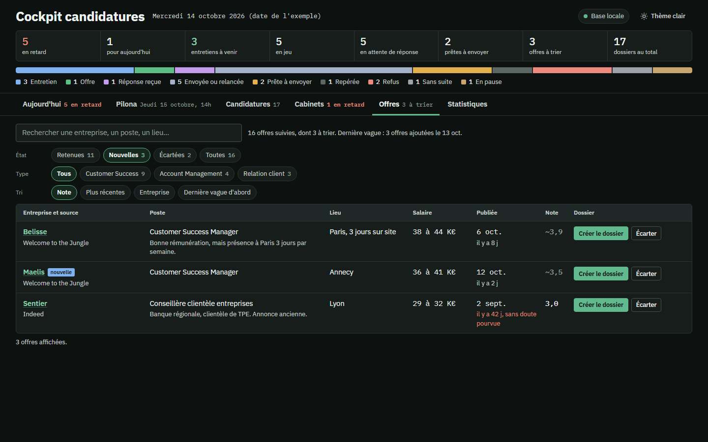

L'annonce, évaluée
Tu colles une annonce, ou les liens de celles trouvées dans la semaine. Mission CDI les lit, les compare à ton profil et à tes critères, les note sur 5 et les range dans ton cockpit. Celles qui ne collent pas sont écartées, avec la raison.
Quand un site ne se laisse pas lire, le lien est gardé avec la note « à ouvrir dans le navigateur », et tu colles le texte de l'annonce.
À dire à ClaudeVoici une annonce qui m'intéresse, évalue-la.
